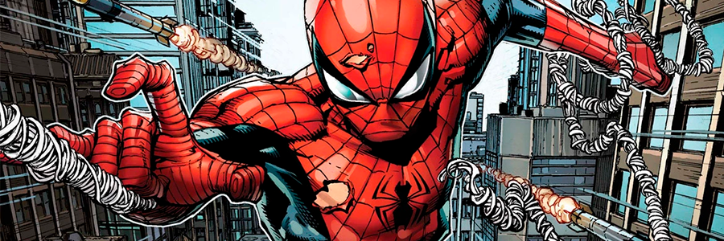
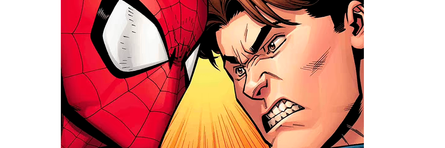
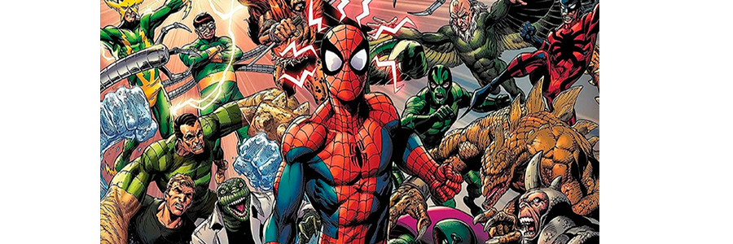

Criado por Stan Lee e Steve Ditko, o Homem-Aranha, também conhecido como Peter Parker, é um dos mais icônicos e amados super-heróis de todos os tempos. Com seu traje característico e seu senso de responsabilidade, o Homem-Aranha luta contra o crime nas ruas de Nova York, combinando agilidade, inteligência e um grande coração para proteger a cidade e seus habitantes, equilibrando a vida de herói e a vida de adolescente.
A origem do Homem-Aranha começa com Peter Parker, um jovem estudante picado por uma aranha radioativa, concedendo-lhe habilidades extraordinárias. Inspirado pela morte de seu tio Ben e o lema "Com grandes poderes vêm grandes responsabilidades", Peter decide usar seus dons para combater o crime como o Homem-Aranha, tornando-se um herói icônico nos quadrinhos.
A relação entre a vida de herói e a vida pessoal de Peter Parker, o Homem-Aranha, é uma característica central de sua história. Na vida pessoal, Peter Parker é um jovem inteligente e tímido, frequentemente preocupado com questões cotidianas, como escola, trabalho e relacionamentos, e por outro lado, como Homem-Aranha, Peter se dedica a combater o crime e a proteger Nova York. Ele enfrenta uma série de desafios, incluindo inimigos notórios como o Duende Verde e o Doutor Octopus. Sua identidade secreta como herói o força a manter segredos de seus entes queridos, o que gera conflitos internos e emoções complicadas.
Os vilões do Homem-Aranha são personagens notáveis e diversos que desafiam o herói ao longo das décadas. Alguns dos mais icônicos incluem o Duende Verde, o Doutor Octopus e o Venom, cada um com suas próprias motivações e poderes. Esses antagonistas adicionam profundidade e complexidade às histórias, tornando as interações entre o Homem-Aranha e seus inimigos um aspecto fundamental das narrativas. A variedade de vilões contribui para a riqueza do universo do Homem-Aranha, consolidando seu status como um dos super-heróis mais amados da cultura pop.
